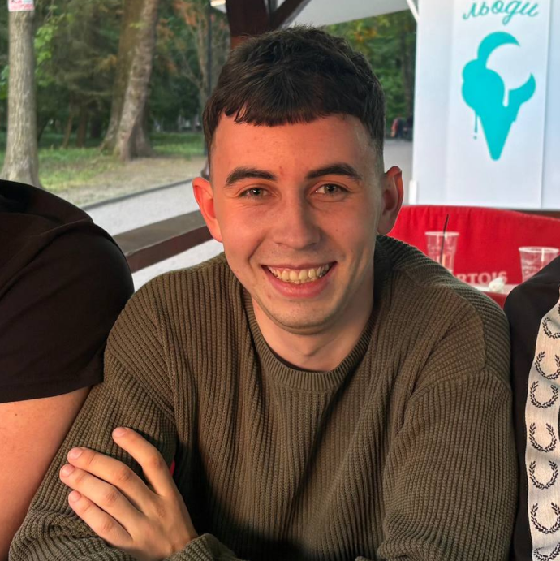

About me:
I am a 19-year-old Software Engineering student at the Carpathian National University.
Originally from Balyntsi, I am currently balancing my academic studies with a hands-on approach to software development.
I am passionate about writing clean, efficient code that not only performs well but also provides a seamless user experience.
I find great drive in bridging the gap between creative UI/UX design and the rigorous logic of cybersecurity.
I believe that modern software needs to be more than just functional; it must be inherently secure and resilient against external threats.
I am constantly refining my skills to find the right balance between intuitive, user-friendly interfaces and robust, high-standard security implementations to build digital products people can truly trust.
Beyond my core focus, I am deeply committed to continuous growth. I am actively sharpening my expertise in C++ and web technologies, consistently challenging myself with complex algorithmic problems and modern development practices.